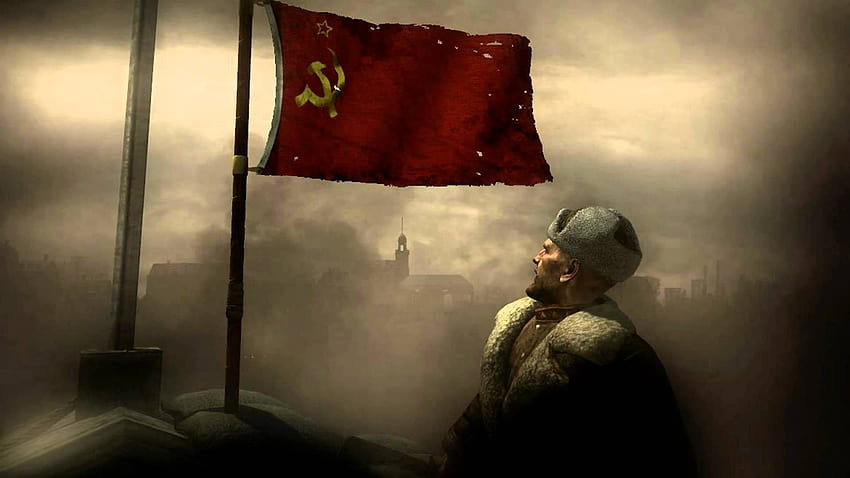

La misión comienza con Reznov y el soldado Dimitri Petrenko acechando a un enemigo alemán conocido como el General Heinrich Amsel. Reznov guía a Petrenko a través de las calles devastadas de Stalingrado durante el cercano asedio alemán y soviético de la ciudad. La atmósfera es tensa y peligrosa, ya que los dos soldados intentan evitar la detección mientras se acercan a su objetivo. Finalmente, Reznov y Petrenko llegan a un edificio en ruinas donde se cree que se encuentra el General Amsel. A medida que avanzan por el edificio, enfrentan a numerosos soldados alemanes, y la misión se vuelve cada vez más intensa. Los jugadores deben utilizar su habilidad y sigilo para eliminar a los enemigos y avanzar hacia su objetivo. Una vez que encuentran al General Amsel, se desarrolla un enfrentamiento tenso y emocional. Reznov busca venganza por las atrocidades cometidas por Amsel contra sus camaradas y su pueblo. El jugador debe luchar contra el General Amsel en un duelo cara a cara y finalmente logra eliminarlo.
La misión comienza con un asalto soviético en una fábrica ocupada por tropas alemanas en las afueras de Stalingrado. Koslov y Reznov lideran el ataque, enfrentándose a intensos combates en medio de la destrucción y el caos de la batalla. El jugador debe avanzar, enfrentando a soldados alemanes y superando obstáculos, como barricadas y alambres de púas. A medida que la misión avanza, Koslov y Reznov se abren paso hacia el interior de la fábrica, luchando contra una feroz resistencia alemana. La narrativa se centra en la dura realidad de la guerra y los sacrificios que los soldados soviéticos deben hacer por su país y su gente. Durante la misión, se producen momentos emocionales y desgarradores, ya que los jugadores son testigos de la devastación de Stalingrado y las luchas personales de los soldados soviéticos. La historia es un recordatorio del valor y la valentía de los soldados que defendieron su tierra con valentía y dedicación, a pesar de las dificultades y pérdidas que enfrentaron.
La misión "Sangre y Hierro" se desarrolla en la Batalla de Seelow Heights, que tuvo lugar en abril de 1945 y fue una de las últimas grandes batallas en el frente oriental antes de la caída de Berlín. El nivel comienza con un épico asalto soviético contra las defensas alemanas en las colinas de Seelow. Los jugadores deben avanzar bajo un intenso fuego enemigo, superando obstáculos como trincheras y alambradas. A medida que avanzan, son testigos de la devastación de la guerra, con escombros, tanques destruidos y cuerpos caídos a su alrededor. El nivel destaca por su enfoque en la acción y la intensidad de la batalla, pero también presenta momentos emocionales y dramáticos a medida que los jugadores se enfrentan a situaciones desafiantes y presencian la valentía y el sacrificio de los soldados soviéticos. A medida que los jugadores avanzan, se encuentran con Reznov, quien lidera la carga contra las posiciones alemanas. Reznov se destaca como un personaje carismático y valiente, y su liderazgo inspirador impulsa a los soldados a seguir adelante en la batalla. La misión culmina con un enfrentamiento en un puente donde los jugadores deben eliminar a un temible Tiger I alemán para avanzar. El jugador toma el control de un cañón antitanque para destruir el tanque enemigo en una secuencia emocionante y desafiante.
En la misión "El Anillo de Acero", los jugadores asumen el papel del sargento Viktor Reznov y el soldado privado Dimitri Petrenko, quienes forman parte del Ejército Rojo durante la Segunda Guerra Mundial. La misión se desarrolla en abril de 1945, durante la ofensiva soviética para tomar la capital alemana, Berlín. La misión comienza con los soldados soviéticos avanzando a través de la ciudad de Berlín, enfrentando una feroz resistencia alemana. Los jugadores deben superar obstáculos como barricadas y enfrentarse a enemigos en edificios y calles mientras luchan para avanzar hacia el corazón de la ciudad. El objetivo principal de la misión es asegurar la Reichstag, un importante edificio gubernamental y símbolo del poder nazi en Berlín. Reznov y Petrenko lideran el asalto al edificio, enfrentándose a numerosos soldados alemanes en el proceso. Una vez dentro de la Reichstag, los jugadores deben enfrentar una última batalla épica contra las fuerzas alemanas, incluido un enfrentamiento contra un tanque Tiger II. La intensidad y la emoción se intensifican mientras los jugadores luchan contra las defensas enemigas para capturar la Reichstag. La misión culmina con una escena emblemática en la que el jugador iza la bandera soviética en lo alto del Reichstag, simbolizando la victoria y la liberación de Berlín por parte del Ejército Rojo.
La misión comienza con los soldados soviéticos avanzando a través de la ciudad de Stalingrado, enfrentando una intensa resistencia de las fuerzas alemanas. La batalla es feroz y devastadora, y los jugadores deben superar obstáculos como barricadas y enfrentarse a enemigos en edificios en ruinas y calles llenas de escombros. En el transcurso de la misión, los jugadores se unen a un tanque T-34 para avanzar hacia el corazón de la ciudad y desalojar a las fuerzas alemanas que se atrincheran en edificios clave. La acción es intensa y caótica, con tiroteos y explosiones en todas partes. Durante la misión, los jugadores también experimentan escenas dramáticas y emocionales mientras luchan por la liberación de su país y enfrentan las dificultades de la guerra. La misión "Desalojo" muestra la valentía y la tenacidad de los soldados soviéticos que lucharon en la feroz batalla de Stalingrado, un momento crucial en la Segunda Guerra Mundial.
La misión "El Corazón del Reich" se desarrolla en mayo de 1945, durante los últimos días de la Segunda Guerra Mundial, cuando las fuerzas estadounidenses avanzan hacia el centro de Berlín para enfrentarse a las fuerzas alemanas. El objetivo principal de la misión es capturar la Puerta de Brandeburgo, un famoso monumento de Berlín y un símbolo importante. Los jugadores deben enfrentar una resistencia feroz de las fuerzas alemanas mientras avanzan hacia la puerta. A lo largo de la misión, los jugadores se enfrentan a intensos combates en las calles y edificios de Berlín, luchando contra soldados alemanes y enfrentándose a peligrosas ametralladoras y cañones antitanque. La misión "El Corazón del Reich" es una de las últimas misiones de la campaña estadounidense y culmina con un emocionante enfrentamiento en la Puerta de Brandeburgo. Los jugadores deben eliminar a los defensores alemanes y asegurar la posición mientras luchan por capturar el icónico monumento.
La misión "Caída" se desarrolla en mayo de 1945, cuando el Ejército Rojo ha avanzado hacia el centro de Berlín y se enfrenta a una feroz resistencia por parte de las fuerzas alemanas. El objetivo principal de la misión es capturar el edificio del Reichstag, un importante símbolo político y gubernamental alemán. Reznov y Petrenko lideran el asalto al edificio, enfrentándose a numerosos soldados alemanes en el proceso. La misión "Caída" se caracteriza por su intensidad y caos, con combates cercanos y enfrentamientos en espacios cerrados. Los jugadores deben enfrentar a enemigos en edificios en ruinas y enfrentar obstáculos mientras avanzan hacia el Reichstag. Una vez dentro del Reichstag, los jugadores deben luchar en un épico enfrentamiento contra las fuerzas alemanas para asegurar el edificio. La misión culmina con una secuencia icónica en la que los jugadores deben eliminar a enemigos desde la cúpula del Reichstag mientras defienden su posición.
En la ceremonia, el sargento Viktor Reznov y el capitán Alexei Voronin están presentes para rendir homenaje a sus compañeros caídos. El jugador, que asumió el papel del soldado privado Dimitri Petrenko durante la campaña soviética, observa mientras el discurso del General A. J. Shepherd conmemora el sacrificio y la valentía de los soldados durante la guerra. Durante el discurso, el General Shepherd menciona específicamente a Reznov y Petrenko por sus notables acciones en la batalla, y se les otorga la Cruz de Caballero de la Cruz de Hierro, la condecoración más alta del Ejército Alemán durante la Segunda Guerra Mundial. La narrativa concluye con un emotivo monólogo del sargento Reznov, quien recuerda a Dimitri Petrenko como un verdadero héroe, un amigo y un hermano. Reznov menciona que aunque la guerra ha terminado, la memoria de aquellos que cayeron nunca será olvidada, y que la lucha por la libertad y la justicia continuará.
